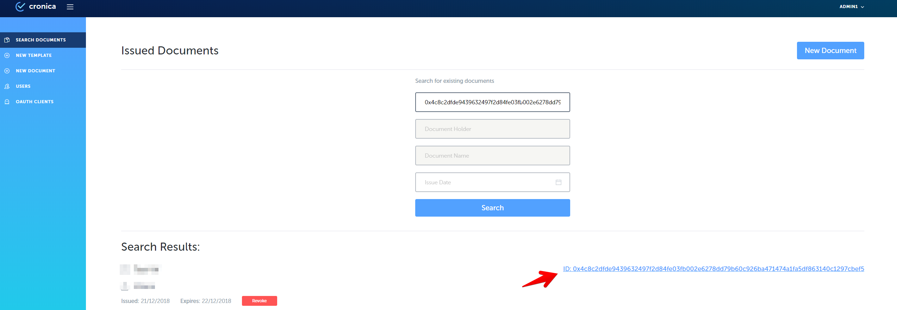

Cronica Infrastructure with vpn
1. Cronica Infrastructure with vpn:
How to add A JasperSoft Template
1. Download and install Jaspersoft Studio 6.6.0 using the link below:
https://community.jaspersoft.com/project/jaspersoft-studio/releases
2. Open Jaspersoft Studio and observe the screen;

3. Click on ‘File’ in
4. Click on ‘New’ in appeared dropdown menu;
5. Click on ‘Jasper Report’;

6. While creating a template use fields, images and other components which you can drag from ‘Palette’;
7. Fields can be used for dynamic information, you have to create new field and use this field as a variable for text field. To create a new field includes follow this steps:
a. Right click by mouse on element ‘Field’ in ‘Outline’ menu;
b. Click on menu item ‘Create Field’;
c. When the field is created, input a name of field and select data type in ‘Properties’ menu;
d. Drag ‘Text Field’ from ‘Palette’ onto the template;

e. Click on ‘Text Field’ within the template;
f. Choose tab ‘Text Field’ in ‘Properties’ menu;
g. Click on ‘Expression Editor’ button;
h. Select a field ‘Field_()’ in the list of fields in ‘Expression Editor’ window;
i. Click on ‘Finish’ button to finish field link.
8. Image components also can be inserted in a template while creating a new one. To insert the image follow next steps:
a. Drag ‘Image’ item from ‘Palette’ to template in place you would like;
b. After you dragged the ‘Image’ into template, ‘Create new image element’ windows will appear. Choose option ‘No image’;
c. Create new parameter by clicking ‘Parameters’ submenu in ‘Outline’ menu and selecting ‘Create Parameter’ option;
d. Rename newly created parameter to “PATH_TO_IMAGES”;

e. Click on dragged image and in tab “Image” click button “Expression Editor”
d. Find “PATH_TO_IMAGES” and add string to expression: .toString()+”/
where
9. Different custom fonts also can be used in a template while creating a new one. To use them, follow next steps:
a. Specify a parameter “pdfFontName” and assign a path to font to this variable which should looks like this pdfFontName=$P{PATH_TO_FONTS}.toString()+”/" where is an actual name of the font;
b. In order to use an Arabic fonts set ‘pdfEncoding’ property to ‘Identity-H’ value;

c. Set ‘pdfEmbedded’ property to ‘true’;
d. Put custom fonts in ZIP archive in the “template/fonts/”
10. When you finish creating the template, create an archive which will contain a template with .jrxml extension and images used by the template with names you specified in a template for “image” items. All images must be located in “template/img/” folder in archive, all fonts must be located in ‘template/fonts/’ folder in archive and archive file as a .zip.
11. Go to the Issuer site for Cronica.io and authorize as an Editor or Administrator
12. Click ‘New Template’

13. Observe as new fields appear;
14. Complete ‘Template Name’ with an appropriate name;
15. Upload .zip archive with a template into Attach File Field;
16. Complete ‘Name’ and ‘System Name’ fields for a variables, according to number of variables used in template, counting ‘Name’ as a name of field displayed to users, when they will creating a documents, counting ‘System Name’ - as a field named in template;
17. Complete all needed fields and click ‘Submit’ button.
18. Observe as newly created template appears in templates list on ‘New Document’ screen
How to Create a Structured Document
1. Go to the Issuer site of Cronica.io and authorize;
2. Click on ‘New Document’ button on the left side menu;
3. Observe list of available templates;
4. Click on any structured document template (all except ‘Generic’);

5. Observe document creation screen with fields for data entry;

6. Input an appropriate document holder name into ‘Document Holder’ field;
7. Input an appropriate expiration date into ‘Expiration date’ field if needed;
8. Select the type of document availability (‘Private’, ‘Public’, ‘Limited’*);
-
- if you click on ‘Limited’, you have to select appropriate institution from the dropdown list;
9. Complete fields for variables and tables’ rows;
10. If you need to add a row to the table, click on ‘New Row’ button below;

11. Click on ‘Submit’ button, when all the changes to the document are finished;
12. Observe the screen on successful document submission;
How to Create a Template with Template Constructor
Step-by-step guide
1. Go to the Issuer site of Cronica.io and authorize as an Editor or Administrator
2. Go to the New Template
3. Input Template Name
4. Click on Constructor button

5. Compose a new template using available tools of Template Constructor
6. If you need to add a table to your template, follow next few steps:
a. Click on 'Table' icon in the tool bar

b. State Table ID to 'TableID'
с. Set number of columns Table ID to 'Columns'

d. Observe table and a columns within template block
e. Input columns names into appropriate columns

f. Table with stated columns will be added to the template
7. If you need to add an input field to your template, follow next few steps:
a. Click on 'Variable' icon in the tool bar
b. Input Variable (field) name to 'Variable Name' field
c. Click on 'Submit' button

d. Observe as newly added variable appears within the template
f. Table with stated columns will be added to the template
8. If you need to add a image to your template, follow next few steps:
a. Click on 'Image' icon in the tool bar
b. Observe 'Select image' popup window
с. Click on '+' button and attach needed image
d. Click on 'Submit' button
e. Observe image within template block

9. If you need to use custom fonts within your template, follow next few steps:
a. Click on 'Insert font' icon in the tool bar

b. Observe 'Select font' popup window
с. Click on '+' button and attach needed image
d. Click on 'Submit' button
e. Click on ‘Fonts’ icon and select newly uploaded font from a dropdown menu
.png)
f. Type need text using selected font
10. Click on ‘Submit’ button, when all the changes to the template are finished

11. Observe block with variable and table name(s)

11. Complete Variable Name fields (f.e. “Client ID”)
12. Complete Table Name fields (f.e. “Financial Table”)
13. If your template has more than one table, complete Table Name field for each table
14. Check all the fields are correctly completed and click on Submit to submit new template
15. Observe newly added template in documents list in New Document menu
How to Create Generic Document
Step-by-step guide
1. Go to the Issuer site of Cronica.io and authorize;
2. Click on ‘New Document’ button on the left side menu ;
3. Observe list of available templates;
4. Click on ‘Generic Document’ template;
5. Input the appropriate document holder name into ‘Document Name’ field;
6. Input the appropriate document holder name into ‘Document Holder’ field;
7. Input expiration date into’Expiration Date’field if needed;
8. Upload a PDF document using ‘Attach File’ field;
9. Click on appropriate document type (‘Private’, ‘Public’, ‘Limited’);
10. If you select ‘Limited’select appropriate institution from the dropdown list;
11. Click on ‘Submit’ button;
12. Observe confirmation of document submission;
How To Create HTML based template
How to add HTML Template to Cronica.io
Step-by-step guide
1. Create html document with any suitable for you html editor, adding images, styles and tables.
2. Put all used images into “../template/img” folder

- Open .html document to make next changes with code:
Change file location for images to just file name: Before:
<img src="./template/img/cronica.png" alt="Cronica">
After:
<img src="cronica.png" alt="Cronica">
**Insert variables to any place of html within <p>, , <div> tags by adding ###variable_name###:**
Before:
<p style="text-align: center;">Declaration of Mr.Smith</p>
After:
<p style="text-align: center;">Declaration of ###name###</p>
Insert “data-tablename” parameter with the table name to table tags:
Before:
<table style="height: 17px; margin-left: auto; margin-right: auto;" width="631">
After:
<table data-tablename="new_table" style="height: 17px; margin-left: auto; margin-right: auto;" width="631">
Add name for the columns within <td> tags:
Before:
<<td style="width: 88px;"></td>
<td style="width: 88px;"></td>
After:
<td style="width: 88px;">id</td>
<td style="width: 88px;">Sum</td>
4. Save .html file
5. Compress .html file and “template” folder to single .zip archive
6. Go to the Issuer site of Cronica.io and authorize as an Editor or Administrator
7. Go to the New Template
8. Input Template Name
9. Click on HTML button
10. Click on ‘Submit’ button
11. Observe block with variable and table name(s)

11. Complete Variable Name fields (f.e. “Client ID”)
12. Complete Table Name fields (f.e. “Financial Table”)
13. If your template has more than one table, complete Table Name field for each table
14. Check all the fields are correctly completed and click on Submit to submit new template
15. Observe newly added template in documents list in New Document menu

How to create Quorum Network and Add New Node
Minimal requirements for server hardware and software:
Instance type: t3.micro, t2/t3 unlimited Storage: EBS volume 200 GB (SSD, GP2)
How to configure first node:
- Connect to the virtual machine based on Ubuntu 16.04 with preinstalled:
sudo apt-get update -y
sudo apt-get install docker.io docker-compose -y;
sleep 2; sudo usermod -a -G docker ubuntu
docker info
docker-compose –version
1.1 git clone https://github.com/cronicaio/quorum-maker.git
1.2 Enter directory of Quorum-Maker service - $ cd quorum-maker
1.3 Run setup script - $ ./setup.sh
2.Set the network parameters, as described below:
2.1 Select "Create new network" - enter " 1" and press [Enter]
2.2 Input the name of the node - Type node_name and press [Enter]
2.3 Input IP address of this node - Type first_node_ip_address (IP address of the current server) and press [Enter]
2.4 Input RPC Port of this node - Type rpc_port_number or press [Enter] for default [Default:22000]
2.5 Input Network Listening Port - Type network_listening_port_number or press [Enter] for default [Default:22001]
2.6 Input Constellation Port - Type constellation_port_number or press [Enter] for default [Default:22002]
2.7 Input Raft Port - Type raft_port_number or press [Enter] for default [Default:22003]
2.8 Input Node Manager Port - Type node_manager_port_number or press [Enter] for default [Default:22004]: "22004"
2.9 Input WS Port of current node - Type WS_node_port or press [Enter] for default [Default:22005]: "22005"

Node configuration screen example for configuration of first node
-
Observe success message
-
Your node started at http://first_node_server_ip_address:22004
if you'll need to restart node after stop, follow next steps:
- Go to node service directory on your server - $ cd ./{node_name}
- Run node execution script - $ .** /start.sh**
How to configure second and other nodes:
- Connect to the virtual machine based on Ubuntu 16.04 with preinstalled:
1.1 git clone https://github.com/cronicaio/quorum-maker.git
1.2 Enter directory of Quorum-Maker service - $ cd quorum-maker
1.3 Run setup script - $ ./setup.sh
- Set the network parameters, as described below:
2.1 Select "Join network" - enter " 2" and press [Enter]
2.2 Input the name of the node - Type node_name and press [Enter]
2.3 Input IP Address of first node - Type first_node_ip_address (IP address of the existing) and press [Enter]
2.4 Input Node Manager Port of first node - Type node_manager_port_number or press [Enter] for default [Default:22004]
2.5 Input IP Address of current node - Type current_node_ip_address (IP address of the existing) and press [Enter]
2.6 Input Network Listening Port of current node - Type network_listening_port_number or press [Enter] for default [Default:22001]
2.7 Input Constellation Port of current node - Type network_listening_port_number or press [Enter] for default [Default:22002]
2.8 Input Raft Port of current node - Type raft_port_number or press [Enter] for default [Default:22003]
2.9 Input Node Manager Port of current node - Type node_manager_listening_port_number or press [Enter] for default [Default:22004]: "22004"
2.10 Input WS Port of current node - Type WS_node_port or press [Enter] for default [Default:22005]: "22005"
Node configuration screen example for joining network node
- Go to http://first_node_server _ip_address : 22004 and accept second node via web interface.


-
Observe notification of successful connection in the node manager web interface of first node
-
Your node started at http://first_node_server_ip_address:22004
if you'll need to restart node after stop, follow next steps:
- Go to node service directory on your server - $ cd ./{node_name}
- Run node execution script - $ .** /start.sh**
Accounts** :**
- Go to the site 1 node http://first_node_server_ip_address:22004
1.1 Press button "Accounts"
1.2 To create a new account you need to come up with a password and click the "Submit" button
1.3 After that the new account appears in the list with the generated key and your password

1.4 After creating an account, you should refill it
- Connect to our 1 node:
$ ssh root@first_node_server_ip_address
- Download geth client (binary file): cd
mkdir geth_binary
cd geth_binary
wget https://gethstore.blob.core.windows.net/builds/geth-linux-amd64-1.8.15-89451f7c.tar.gz
tar xvzf geth-linux-amd64-1.8.15-89451f7c.tar.gz
cd geth-linux-amd64-1.8.15-89451f7c
cp ./geth ~/geth
cd
rm -r geth_binary
3.1 Attach to the node using command:

~/geth attach ~/quorum-maker/cronica/node/qdata/geth.ipc
Where ~/quorum-maker/cronica/node/qdata/geth.ipc - path to geth.ipc interface
3.1.1 Now you should unlock the main account for the transfer to the one we the created accounts

$ web3.personal.unlockAccount(eth.coinbase)
3.1.2 The message about successful unlock should be displayed
3.2 Then you can transfer funds to our created account, Green Vision key transaction
$ eth.sendTransaction({from:eth.coinbase, to:"0xb8fa57faa98a8796b4b527214bdafd23b8426470", value:10000})
3.3 Detailed information about our transaction should be displayed

$ eth.getTransactionReceipt("enter the transaction key")
How to Search for a Document on Issuer Site
Step-by-step guide
1. Go to the Issuer site of Cronica.io and authorize;
2. Click on ‘Search document’ button on the left side menu;
3. Observe document search screen;

4. Insert ID in the “Document ID”

5. At the bottom of our page we get the search result

6. By clicking on the document ID, the pdf document is displayed.
